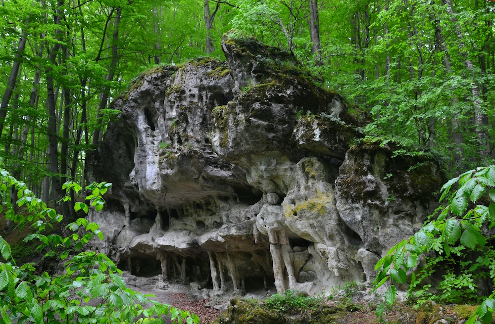

Хорошим місцем для відпочинку є Українські Карпати. Це місце я рекомендую геть не усім людям, які звертаються до мене за порадою для поїздки природніми місцями. І ось чому:
Українські Карпати щороку стають все більш популярним місцем відпочинку як для українських, так і для іноземних туристів. Природно-кліматичні умови та історико-культурна спадщина регіону створюють можливості для більшості сучасних видів туризму. Місцевий туризм має ще багато слабких сторін, які не дають йому конкурентно прирівнятися до прийнятих у розвинутих країнах світу стандартів. Але постійне збільшення туристичних потоків та інвестування у місцевий бізнес стимулюють розвиток туристичної індустрії у кращу сторону, що в свою чергу впливає як на покращення соціально-економічних умов життя місцевого населення, так і на зростання економічних показників у Карпатському регіоні в цілому.
Ось декілька найвідоміших та найвищих гір Карпат:
ГОВЕ́РЛА – найвища вершина Українських Карпат і всієї України, на межі Івано-Франківської та Закарпатської областей. Входить до складу гір. масиву Чорногора. Вис. 2061 м. Має конусоподібну форму зі стрімкішим пд. і пологішим пн. макросхилами. На схилах – форми та відклади плейстоценового зледеніння (кари, морени), каменепади. Узимку бувають снігові лавини.
Сформована пісковиками й конгломератами чорногір. світи. У нижній частині вкрита смерековими лісами, вище – субальпій. та альпій. луками, чагарник. пустищами, подекуди трапляються кам'яні розсипища. Біля підніжжя сх. схилу – один із витоків Пруту, водоспад. На вершині Г. споруджено декілька пам'ят. знаків. Об'єкт туризму. Г. розташ. у межах заповід. зони Карпат. нац. природ. парку.
Бребене́скул — одна з найвищих вершин хребта Чорногора (Українські Карпати). Розташована посередині хребта, на межі Івано-Франківської та Закарпатської областей, між вершинами Менчул (1998 м) на південному сході та Ребра (2001 м) на північному заході.
Висота — 2038 м (за іншими даними 2032 або 2035). Поверхня куполоподібна. На схилах поширені давньольодовикові форми рельєфу, сліди процесів морозного вивітрювання. Гора вкрита альпійськими і субальпійськими луками, характерні кам'яні розсипища та осипища. На захід від вершини розташоване найвисокогірніше озеро України — Бребенескул, з якого витікає річка Бребенескул.
Найближчий населений пункт — село Бистрець (Івано-Франківська область).
Піп Іва́н (також Піп Іван Чорногі́рський або Чорна Гора) — одна з найвищих вершин Українських Карпат, з висотою 2020.5 м. Розташована на південно-східному кінці головного хребта масиву Чорногора, на межі Івано-Франківської та Закарпатської областей.
На вершині гори знаходяться руїни польської астрономо-метеорологічної обсерваторії, частково відновлені для туристичних потреб і відомі під сучасною популярною назвою «Білий Слон».
Гора, цікава як з точки зору пішохідного туризму, так і як атракційний об’єкт, адже на її вершині стоїть найвисокогірніша українська споруда — величезна кам’яна обсерваторія.
Одна з найцікавіших карпатських гір для сходження. Тих, хто дійде вершини стрімкими схилами Петросу буде чекати щедра винагорода — звідси вся Чорногора, як на долоні: від Говерли аж до Піп-Івану!
Петрос — передостання вершина на Чорногірському хребті. Гора видовищна і придатна для сходжень будь-якої пори року. Зауважте тільки, що підйом на зимовий Петрос — завдання не для новачків: такому походу надана категорія складності 2-А (далеко не найскладніший маршрут, проте без відповідного спорядження, досвіду та кваліфікованого інструктора сюди краще не потикатись).
ГУ́ТИН-ТОМНА́ТИК – одна з найвищих гірських вершин Українських Карпат. Лежить на пд. відрогах гір. масиву Чорногора, у межах Закарп. обл. Вис. 2016 м. Вершина асиметрична, трапляються льодовик. форми рельєфу. Біля підніжжя пн.-сх. схилу – давньольодовик. кар, у якому розташ. оз. Бребенескул. Схили вершини вкриті субальп. та альп. рослинністю, у складі якої є багато рідкіс. та релікт. видів. Об'єкт екол. туризму.
Гора Ребра, висотою 2001 м, розташована в центральній частині Чорногірського хребта. Є однією із найвищих вершин України і замикає шестірку так званих «двотисячників» Українських Карпат, куди входять Говерла, Бребенескул, Піп Іван Чорногірський, Петрос та Гутин Томнатик.
Знаходяться Ребра на межі двох областей – Закарпатської та Івано-Франківської.
Південні схили вершини достатньо пологі, вкриті в основному травостоєм та криволіссям, однак північні і північно-східні – це непрохідні круті скелясті урвища.
У східному напрямку від гори Ребра в урочищі Гаджина, сформованому на основі розлогого льодовикового кара, розташовано декілька невеличких високогірних озерець.
На самій вершині та її схилах ростуть різноманітні рідкісні рослини, занесені до Червоної книги України.
Щоб побачити печери, каньйони, величезні скелі та просто фантастичні краєвиди не потрібно їхати за кордон. В Україні є безліч цікавих та мальовничих місць. Переривши увесь інтернет та звернувшись до книжкових джерел, я знайшов та зібрав для вас невелику підбірку неймовірних локацій природи України. Ось декілька з топових природніх місць, які варто відвідати.
Оптимістичну печеру відкрили у 1966 році, знаходиться вона у Борщівському районі Тернопільської області неподалік села Королівка. Це найдовша гіпсова печера у світі: довжина — близько 260 км. Вона досі повністю не досліджена, в експедиції сюди приїжджають спелеологи з усього світу. Всередині печери лабіринти, багато мінеральних утворень (кристалів, сталактитів, геліктитів) та навіть підземні озера. Подивитись є на що.
Тустань — наскельне місто-фортеця, яке було оборонним та адміністративним центром протягом 9-15 століть. Знаходиться Тустань неподалік села Урич у Сколівському районі Львівської області. Заснували місто племена хорватів, потім його завоювали поляки, а з кінця 16 століття Тустань почала занепадати та згодом залишились лише кам’яні основи фортеці. Завдяки дослідженням та археологічним розкопкам вченим вдалось відновити графічну реконструкцію фортеці з точністю майже 90%.
У 1994 році задля збереження наскельного комплексу було створено національний історико-заповідний комплекс, зараз це популярне туристичне місце. З 2012 року тут щороку проводиться фестиваль української середньовічної культури «Ту Стань!». Місце справді дуже гарне й захоплююче. З оглядового майданчика на скелях відкривається неймовірно красивий краєвид. А навколо є зручний пішохідний маршрут.
Вухатий Камінь — це мальовнича гора у Карпатах у масиві Чорногори, що знаходиться у Верховинському районі Івано-Франківської області, висота — 1864 м над рівнем моря. Гора цікава тим, що на вершині є скелі чудернацької форми — улюблене місце для перепочинку та фотографій усіх туристів. А ще з Вухатого Каменя відкривається неймовірно гарний краєвид на Карпати. Через гору проходить маршрут з села Дземброня на вершину Чорногірського хребта, також через Вухатий Камінь можна пройти на гору Піп Іван. Ще одна атракція — Дзембронські водоспади, які знаходяться на північно-східному схилі гори.
Скелі Довбуша — надзвичайно красивий скельно-печерний комплекс на висоті 668 метрів розташований неподалік від села Бубнища в Івано-Франківській області. Скельні виступи утворились тут приблизно 70 мільйонів років назад, їх висота сягає 80 метрів, ширина — 200 м, довжина — майже 1 кілометр.
У 17-18 столітті у скелях створили табір опришки (народні повстанці), тут досі залишились сліди рукотворних печер, у яких вони жили. Назва також походить ще з тих часів — Олекса Довбуш був ватажком опришків у Карпатах. Зараз Скелі Довбуша популярне туристичне місце. А ще це улюблене місце скелелазів, тут вони регулярно проводять свої змагання.
Актівський каньйон — природний комплекс з гранітних скель та валунів площею 250 гектарів, частина національного парку «Бузький Гард» та зовсім нетипова природна зона для українського степу. Це місце називають українським Гранд-Каньйоном, пейзажі тут гарні і незвичайні: річка з містичною назвою Мертвовод протікає серед вузьких ущелин та скель, висота яких місцями досягає 50 метрів (як двадцятиповерховий будинок).
Історія каньйону овіяна легендами: начебто колись скіфи проводили тут свої містичні ритуали, тому місцевість ніби то має особливу енергетику. Зараз каньйон популярна туристична локація, з найближчих великих міст — Одеси, Херсон, Миколаїв — сюди постійно возять групи на екскурсії. Часто у маршрут таких екскурсій також входить відвідування Арбузинського каньйону та Трикратського лісу.
Протяті камені — мальовничий скельний масив в Покутсько-Буковинських Карпатах, неподалік від перевалу Німчич у Чернівецькій області. Скелі утворились з пісковика, на деяких з них багато отворів різної величини — звідси й назва протяті. Одна з найцікавіших скель у масиві — Соколине око. Називається вона так, тому що в результаті ерозії на висоті приблизно 40 метрів утворилась кам’яна арка, що нагадує око. У підніжжі скелі також є невелика печера.
Під час мандрівки до Протятих каменів можна також відвідати Буковинські водоспади, які знаходяться неподалік. Всього тут є сім водоспадів висотою від 3,5 до 19 метрів: Ковбер, Сич, Нижній Гук, Ворота, Середній Гук, Великий Гук (найбільший), Верхній Гук. Це дуже мальовниче та цікаве місце для відвідування.
Грот Прийма знаходиться посеред лісу недалеко від міста Миколаїв у Львівській області. Грот доволі мало відомий серед туристів, але насправді це дуже визначна пам’ятка археології європейського значення. Цій печері понад 45 тисяч років, археологи знайшли тут сліди поселення та артефакти, що належали неандертальцям. Зовсім поряд з Приймою є ще кілька цікавих місць, які можна відвідати в рамках вихідного дня.